База података за салон аутомобила у СУБП-у Oracle Apex - пројектни рад - 3. део¶

Пројектни задатак се састоји од три веће целине:
Креирати базу података за салон аутомобила на основу датог модела и података.
Написати PL/SQL програме који су решења датих задатака.
Креирати апликацију помоћу алата App Builder.
Базе података користимо готово увек путем апликација које имају графички кориснички интерфејс и које приступају самој бази.
Трећи део пројекта подразумева да се креира програм употребом алата App Builder.
Приликом рада на било ком делу пројекта, погледајте претходно решене примере и лекције. Након што решите неки задатак па желите да проверите да ли је решење добро или видите да не можете да га решите, можете да погледате решење које ће се приказати након што кликнете на дугме.
Алату App Builder се приступа у оквиру СУБП-а Oracle APEX:
https://apex.oracle.com/en/ (обавезно логовање на креирани налог)
App Builder

Након што се кликне дугме Create, потребно је изабрати опцију New Application.
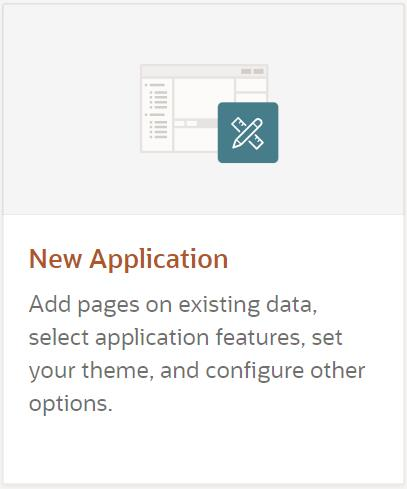{kind=link}
Први кораци у креирању апликације су унос назива и избор изгледа саме апликације.
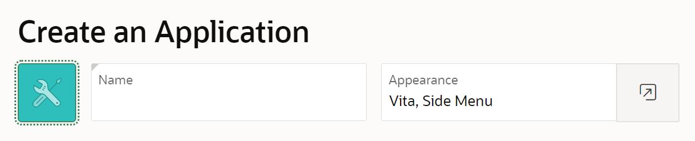{kind=link}
Изглед апликације подразумева дизајн, тј. тему, и организацију навигације кроз странице апликације. Увек постоји неки подразумевани избор, али он може да се промени. На претходној слици се види да је тема Vita, а организација навигације кроз апликацију је Side Men*u. Ово може да се промени кликом на дугме које се налази са десне стране. Постоје неке предложене теме, а могуће је дефинисати и нову кликом на дугме *Use Custom Theme.
Назив апликације треба да се унесе у поље Name. Назив је произвољан, али треба да буде добро осмишљен да кратко описује чему апликација служи. У овом примеру ћемо апликацију да назовемо Aplikacija_salon_automobila.
Следећи корак је додавање страница апликацији. Поред почетне странице, додаћемо три странице које ће редом одговарати табелама sa_proizvodjaci, sa_kategorije и sa_modeli.
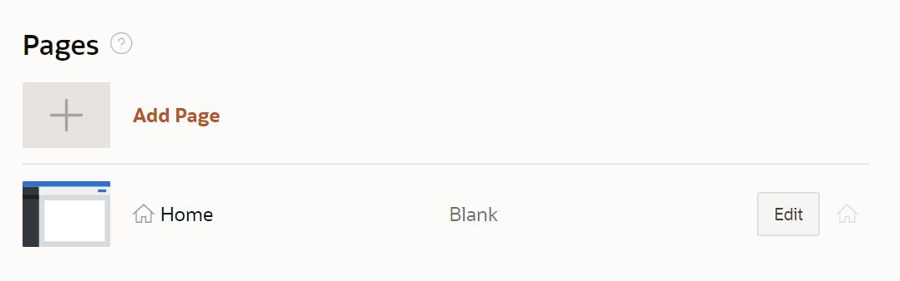{kind=link}
Уобичајени називи за странице апликације које приступају табелама у релационој бази података и имају графички кориснички интерфејс су:
образац (Form) за унос података;
извештај (Report) за приказ података.
Након клика на дугме Add Page, изабрати Interactive Report.
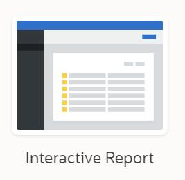{kind=link}
Појавиће се прозор који можете да видите на следећој слици.
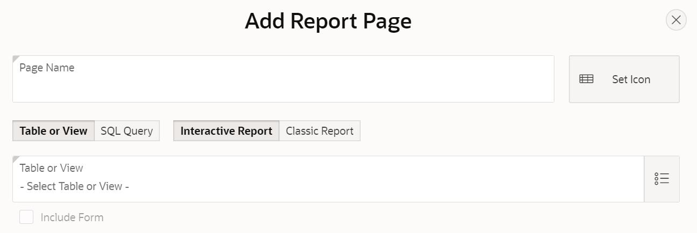{kind=link}
Пре него што се кликне на дугме Add Page, потребно је урадити следеће:
Унети Tabela_sa_proizvodjaci као назив за извештај Page Name.
Кликнути на дугме десно од поља за избор табеле -Select Table or View- и изабрати табелу sa_proizvodjaci.
Штриклирати опцију Include Form.
{kind=link}
Након што се креира ова страница апликације, поновити поступак за извештај који је у вези са табелом sa_kategorije:
Кликнути на дугме Add Page и изабрати Interactive Report.
Унети Tabela_sa_kategorije као назив за извештај Page Name.
Кликнути на дугме десно од поља за избор табеле -Select Table or View- и изабрати табелу sa_kategorije.
Штриклирати опцију Include Form.
Кликнути на дугме Add Page.
Потребно је креирати још једну страницу која је у вези са табелом sa_modeli:
Кликнути на дугме Add Page и изабрати Interactive Report.
Унети Tabela_sa_modeli као назив за извештај Page Name.
Кликнути на дугме десно од поља за избор табеле -Select Table or View- и изабрати табелу sa_modeli.
Штриклирати опцију Include Form.
Кликнути на дугме Add Page.
Странице ће се појавити на списку свих страница апликације
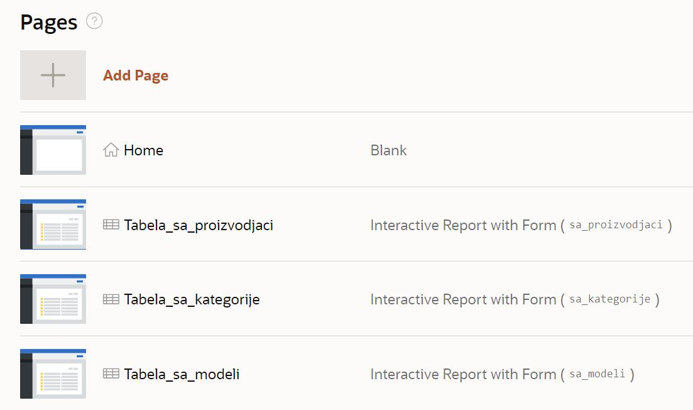{kind=link}
Да би се завршио процес креирања апликације, потребно је да се кликне дугме Create Application.

Након што се креира апликација, добијамо њен комплетан преглед са списком свих страница које су у нашем случају обрасци и извештаји у вези са три табеле.
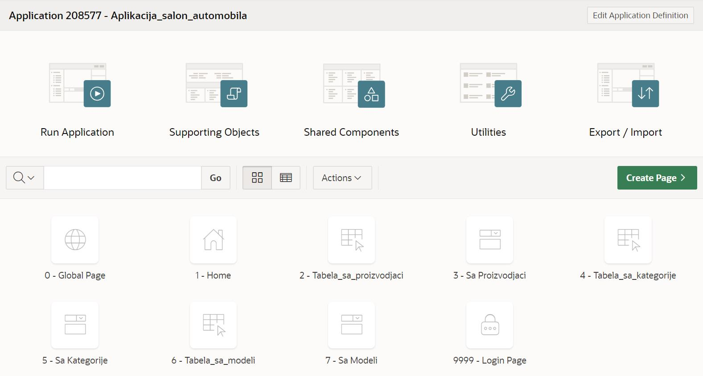{kind=link}
Пре него што се покрене апликација, потребно је извршити још неке промене.
Подразумева се да су поља за унос вредности примарног кључа скривена. Постоји механизам да се ове вредности саме попуњавају користећи објекте који се називају секвенце. То је посебно значајно за табеле са великим бројем редова. Секвенце нисмо користили за наш пример базе података за библиотеку, па је потребно да и у апликацији омогућимо да постоје поља за унос идентификационих бројева.
Кликнути на образац за табелу sa_proizvodjaci.
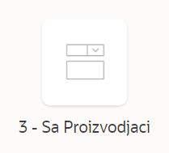{kind=link}
На списку на левој страни пронаћи и кликнути на скривено поље за унос идентификационог броја P3_PIB.
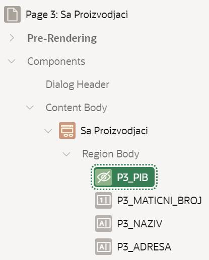{kind=link}
У десном делу екрана се појављују опције у вези са овим пољем.
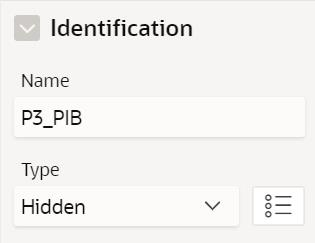{kind=link}
Променити тип поља тако да не буде скривено већ да буде поље за унос броја Number Field, а затим кликнути на дугме Save.
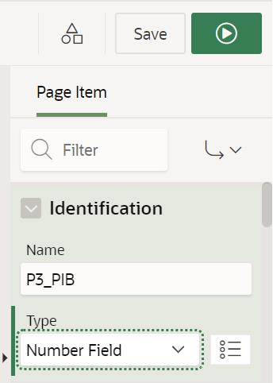{kind=link}
Вратити се на комплетан преглед апликације и изменити одговарајућа поља за id_kategorije и id_modela на обрасцима за табеле sa_kategorije и sa_modeli.
Апликација се покреће кликом на дугме Run Application.

Апликација тражи логовање и за приступ се користе исто корисничко име, тј. имејл адреса, и лозинка као за логовање на онлајн систем Oracle APEX.
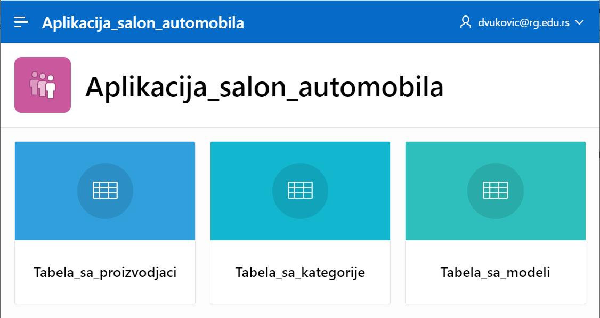{kind=link}
Апликацији можемо да додамо још неке странице. На пример, можемо да додамо страницу са графичким приказом броја модела које имамо у свакој категорији. На овој страници треба да се прикаже резултат следећег упита.
SELECT naziv, COUNT(id_modela)
FROM sa_modeli JOIN sa_kategorije USING (id_kategorije) GROUP BY naziv
Нову страницу додајемо кликом на дугме Create Page. У првом кораку ћемо изабрати Chart, а у наредном, након што кликнемо на дугме Next, изабраћемо Pie.

Назив странице треба да се унесе у поље Name. У овом примеру ћемо страницу да назовемо Broj_modela_po_kategoriji. Да би могао да се унесе упит, потребно је за Source Type изабрати опцију SQL Query. Упит се уписује у поље Enter a SQL SELECT statement.
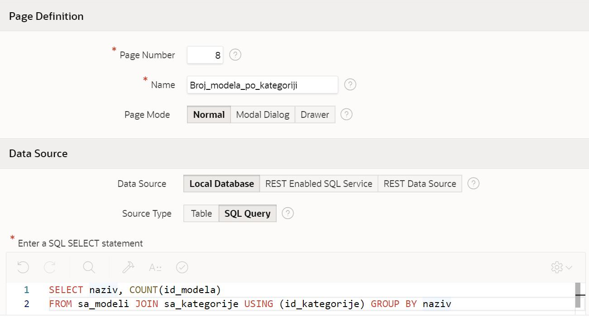{kind=link}
У следећем кораку, пошто се кликне дугме Next, потребно је изабрати назив категорије као Label Column, а број модела као Value Column.
Након што се кликне дугме Create Page, могуће је покренути управо креирану страницу кликом.
{kind=link}
На следећој слици се види новододата страница наше апликације. Страница се аутоматски појавила и у оквиру навигације.
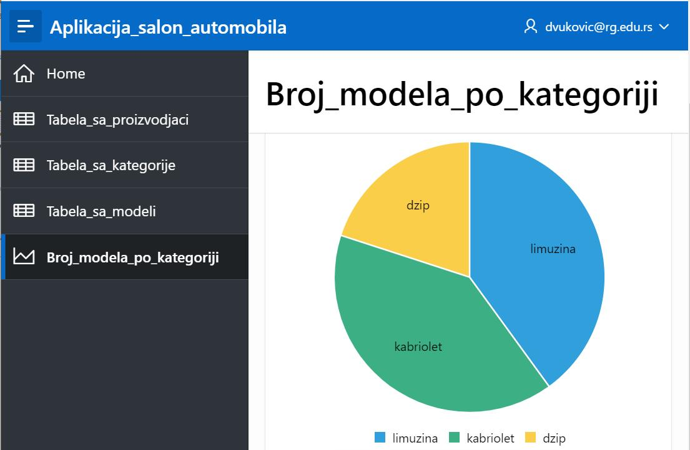{kind=link}